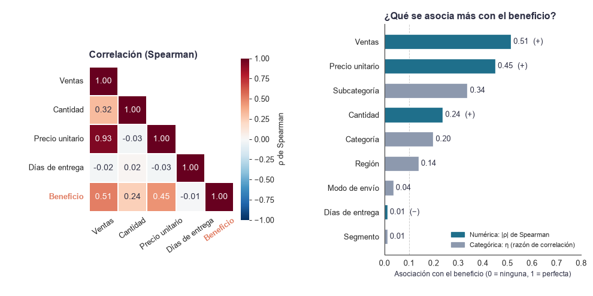
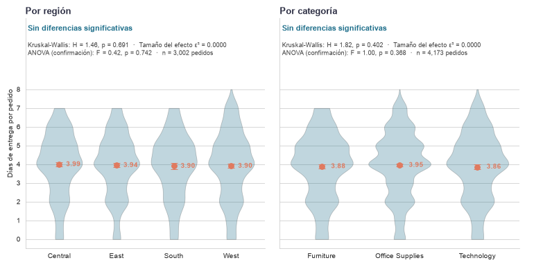
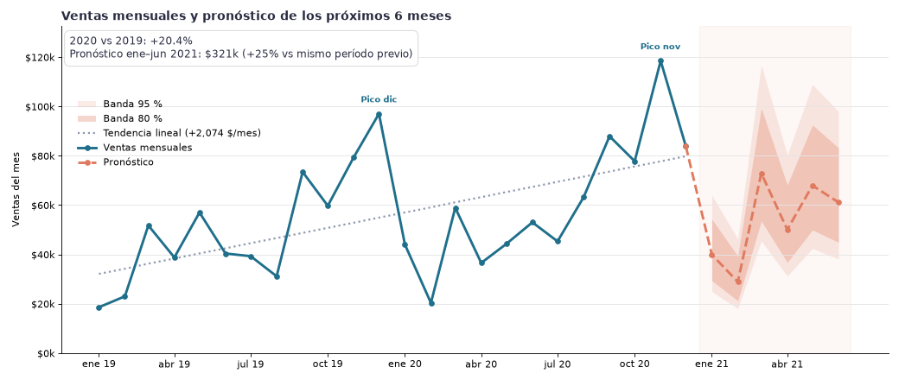
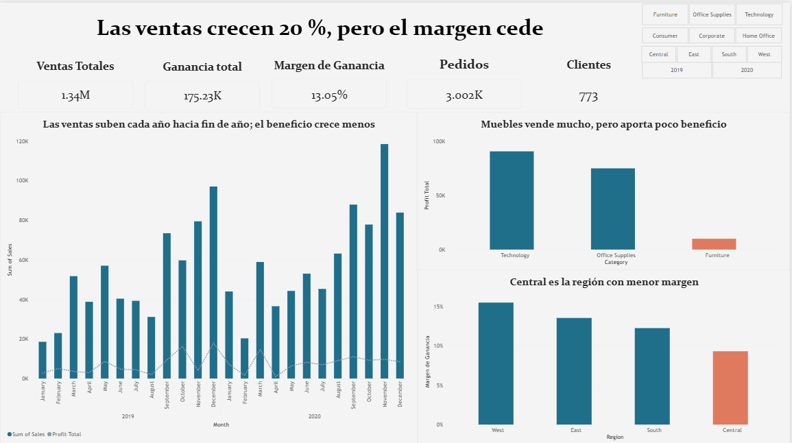
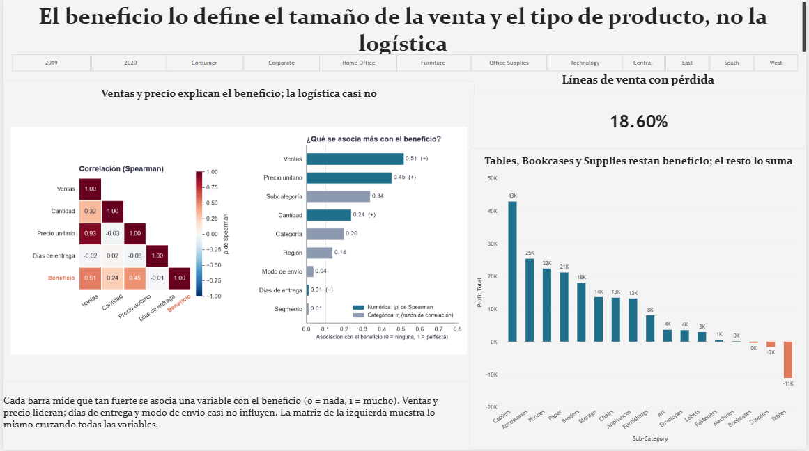
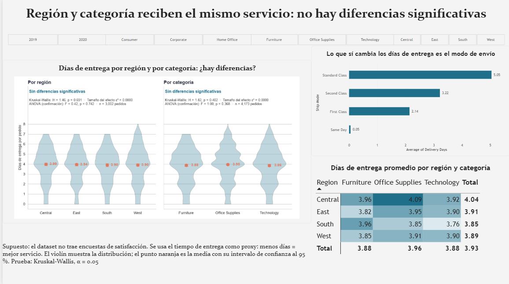
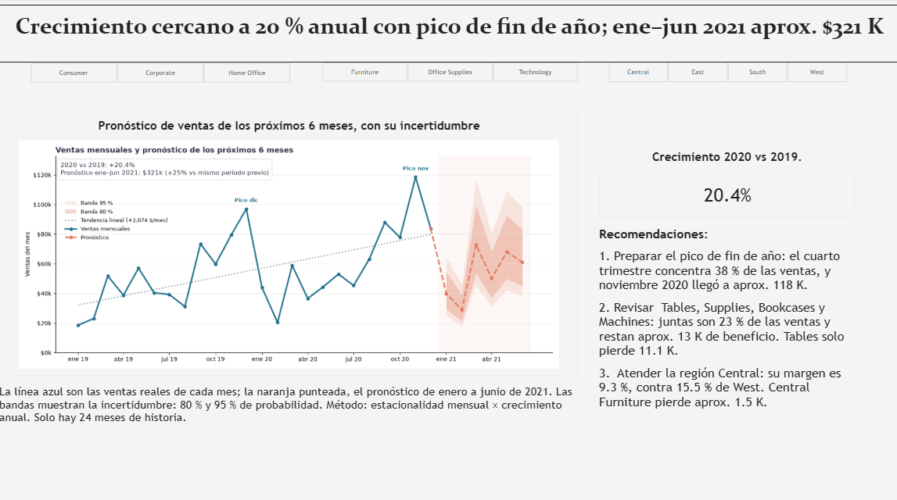

1. Definición del problema
Contexto
Este caso pretende integrar visualizaciones avanzadas generadas con Python en Power BI y desarrollar un tablero interactivo mediante un relato visual. Los datos provienen del Superstore Dataset, que agrupa las líneas de pedido de una empresa de distribución en Estados Unidos entre enero de 2019 y diciembre de 2020, con detalles sobre clientes, productos, envíos, ventas y ganancia.
Preguntas de investigación
- ¿Qué variables presentan mayor correlación con el beneficio total?
- ¿Existen diferencias significativas en la satisfacción del cliente según la región o categoría?
- ¿Cómo se comportan las ventas a lo largo del tiempo y qué tendencia se observa para los próximos meses?
2. Obtención de datos
Se importó el archivo Superstore Dataset (Excel), que tiene dos hojas: Orders y Returns. La hoja Orders contiene 5,899 líneas de pedido con variables como fecha de orden y de envío, modo de envío, segmento, región, categoría y subcategoría de producto, ventas, cantidad y ganancia.
3. Limpieza y transformación (ETL)
Durante el perfilamiento en Power Query se identificó y corrigió lo siguiente:
| Diagnóstico | Decisión |
|---|---|
| Encabezado dañado | El nombre de la primera columna venía como texto corrupto (“Row ID+O6G3A1:R6”), por lo que se renombró a Row ID. Se conservó porque los visuales de Python la necesitan. |
| Fechas de envío con año erróneo | 42 líneas de pedido de diciembre de 2020 tenían Ship Date en enero de 2019, anterior a la fecha de la orden. Con una columna personalizada se sumaron dos años a esas fechas; después de la corrección, los días de entrega quedaron entre 0 y 8, lo cual respeta el rango de cada modo de envío. |
| Datos faltantes | Se buscaron valores vacíos y marcadores como “-”, “--” o “N/A”, porque en el Caso 1 un guion no se detectaba como nulo. No se encontró nada en la hoja Orders. |
| Duplicados | No hay filas repetidas al comparar todas las columnas excepto Row ID, que es único en cada fila. Se aplicó Quitar duplicados con esa condición y no eliminó ninguna fila. |
| Columnas irrelevantes | Country contiene un solo valor (United States), por lo que se eliminó, junto con Customer Name y Product ID, que no se usan en el análisis. |
| Valores atípicos | La ganancia va de −$6,600 a +$8,400. Se conservaron porque reflejan grandes pedidos del negocio. |
Se establecieron los tipos de dato (enteros para Row ID y Quantity, decimales para Sales y Profit, fecha para Order Date y Ship Date, y texto para el resto), con Recortar y Limpiar aplicados a las columnas de texto.
4. Modelado de datos
El análisis usa la tabla Orders. Las devoluciones (Returns) no se pueden vincular con los pedidos, por lo que no se usaron.
Columnas calculadas
- Delivery Days: Ship Date menos Order Date, en días.
- Unit Price: Sales dividido entre Quantity.
- Order Year: año de Order Date.
Medidas DAX
Sales Total, Profit Total, Margen de Ganancia, Crecimiento de Ventas, Líneas con Pérdida %, Pedidos y Clientes. Las dos últimas emplean DISTINCTCOUNT, dado que un pedido abarca varias líneas. Por ejemplo:
Crecimiento de Ventas =
DIVIDE (
CALCULATE ( [Sales Total], Orders[Order Year] = 2020 )
- CALCULATE ( [Sales Total], Orders[Order Year] = 2019 ),
CALCULATE ( [Sales Total], Orders[Order Year] = 2019 )
)Supuesto sobre la satisfacción del cliente
El conjunto de datos no incluye encuestas ni calificaciones. Por lo tanto, se usó el tiempo de entrega (Delivery Days) como indicador: a menos días entre el pedido y el envío, mayor satisfacción se espera. Los resultados de la pregunta 2 deben verse como cambios en el servicio de entrega, no como una medición directa de la satisfacción.
5. Visualización de datos
- $1.34 M Ventas
- $175.2 K Ganancia
- 13.05 % Margen
- 3,002 Pedidos
- 773 Clientes
Visualizaciones avanzadas con Python
Para integrar Python se definió en las opciones de Power BI con las librerías pandas, numpy, matplotlib, seaborn y scipy. En cada visual se arrastran únicamente los campos necesarios de la tabla Orders, con los numéricos en No resumir y Order Date como fecha simple, sin jerarquía.
Visual 1 · Correlación con el beneficio (pregunta 1)

Mapa de calor triangular con seaborn y matplotlib, y un ranking de asociación con el beneficio. Se usó la correlación de Spearman en lugar de la de Pearson, ya que el beneficio tiene valores extremos que podrían afectar una relación lineal. Las variables categóricas (subcategoría, categoría, región, segmento y modo de envío) se analizaron con la razón de correlación (η), calculada sobre los rangos del beneficio para compararla con ρ.
Visual 2 · Tiempo de entrega por región y categoría (pregunta 2)

Gráficos de violín con la distribución de los días de entrega, la media, su intervalo de confianza y el resultado de la prueba. Se analizaron pedidos, no líneas, ya que el tiempo de entrega corresponde al pedido: con 5,899 líneas la región parecía significativa (p = 0.037), pero con 3,002 pedidos ya no lo era (p = 0.69). No se cumplió la normalidad (Shapiro-Wilk, p < 0.001), por lo que la prueba principal fue Kruskal-Wallis, con el ANOVA como confirmación y el tamaño del efecto reportado.
Visual 3 · Ventas mensuales y pronóstico (pregunta 3)

Serie de tiempo mensual con tendencia lineal, un pronóstico a seis meses y bandas de incertidumbre del 80 % y 95 %. El método combina la estacionalidad (el peso promedio de cada mes en su año) con el crecimiento interanual. En una prueba de validación, al predecir de julio a diciembre de 2020, tuvo un error medio del 20 %, frente a 26 % de la tendencia sola. Un modelo Holt-Winters de control predijo aproximadamente $314 mil para el primer semestre de 2021, cercano al resultado final.
Dashboard
El tablero se diseñó en cuatro páginas que transitan de lo general a lo específico. Cada una presenta un título que resume su hallazgo, une gráficos nativos de Power BI que exploran el patrón con un visual de Python que lo profundiza, y comparte segmentadores sincronizados de año, región, categoría y segmento.
Página 1 · Panorama

La empresa vendió $1.34 millones con una ganancia de $175.2 mil, logrando un margen del 13.05 % a través de 3,002 pedidos de 773 clientes. Si bien las ventas crecieron un 20.4 % entre 2019 y 2020, la ganancia solo aumentó un 14.2 % y el margen disminuyó de 13.4 % a 12.7 %. Furniture representó el 31 % de las ventas, pero solo el 6 % de la ganancia. Central tiene el margen más bajo (9.3 %) y West el más alto (15.5 %).
Página 2 · Variables asociadas con el beneficio

Las variables que más se relacionan con el beneficio son las ventas (ρ = 0.51) y el precio unitario (ρ = 0.45), aunque están muy correlacionadas entre sí (ρ = 0.93), lo que indica que miden casi lo mismo. Copiers genera la mayor ganancia con $43 mil, mientras que Tables tiene una pérdida de $11.1 mil a pesar de vender $121.7 mil, y el 18.6 % de las líneas de venta reporta pérdidas.
Página 3 · Servicio de entrega por región y categoría

No hubo diferencias importantes en el tiempo de entrega dependiendo de la región o la categoría: es similar en todas partes, entre 3.86 y 3.99 días. Sin embargo, el modo de envío sí lo afecta. Same Day es el más rápido (0.05 días), seguido de First Class (2.1 días), Second Class (3.2 días) y Standard Class, que tarda cerca de 5 días y es el más popular, con un 59 % de los pedidos.
Página 4 · Ventas en el tiempo y pronóstico

Las ventas subieron de $609 mil en 2019 a $733 mil en 2020, un aumento del 20.4 %. El cuarto trimestre fue el más fuerte, con el 38.4 % de las ventas totales y picos de $97 mil en diciembre de 2019 y $118 mil en noviembre de 2020. Para enero a junio de 2021 se espera vender aproximadamente $321 mil, un 25 % más que en el mismo periodo de 2020. Como solo se tienen 24 meses de datos, las predicciones son aproximadas.
6. Documentación
Respuestas a las preguntas de investigación
| Pregunta 1 | Las variables más asociadas con el beneficio son las ventas y el precio unitario, seguidas por la subcategoría y la cantidad. La logística (días de entrega y modo de envío) y el segmento no se asocian con él. |
| Pregunta 2 | No existen diferencias significativas en el servicio de entrega, usado como indicador de satisfacción, ni por región (p = 0.69) ni por categoría (p = 0.40). Las diferencias provienen del modo de envío. |
| Pregunta 3 | Las ventas crecen cerca de 20 % anual con un pico de fin de año, y para enero a junio de 2021 se espera aproximadamente $321 mil. |
Archivos del proyecto
El informe, el archivo de Power BI, los scripts de Python y las medidas DAX están en el repositorio del proyecto.